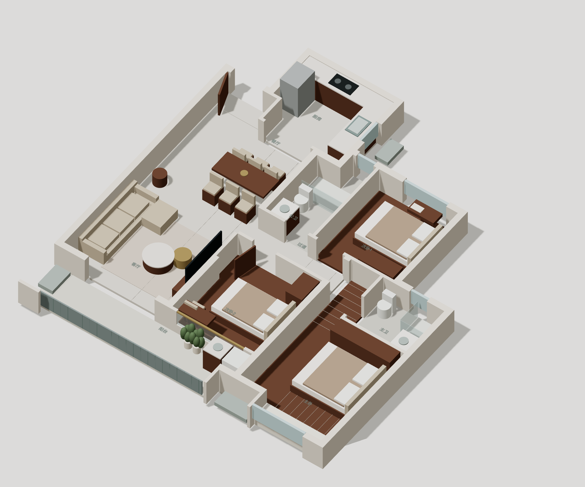
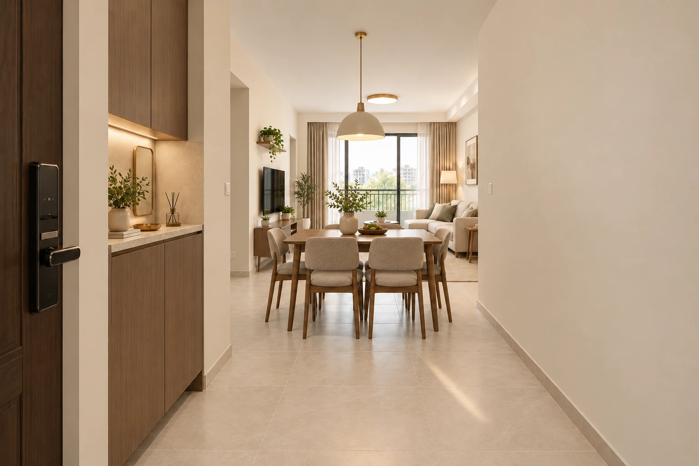
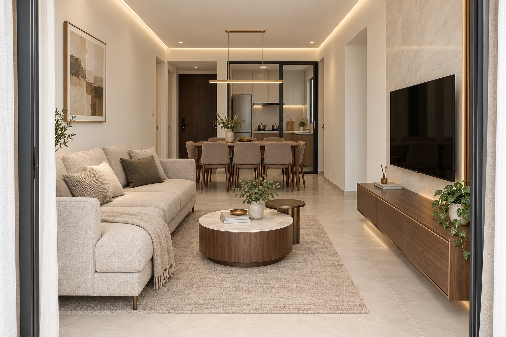
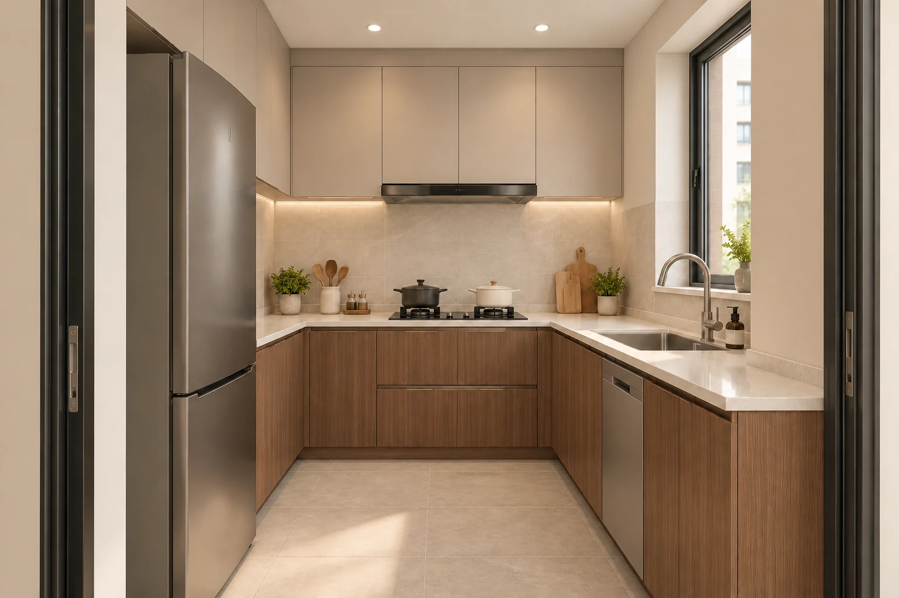
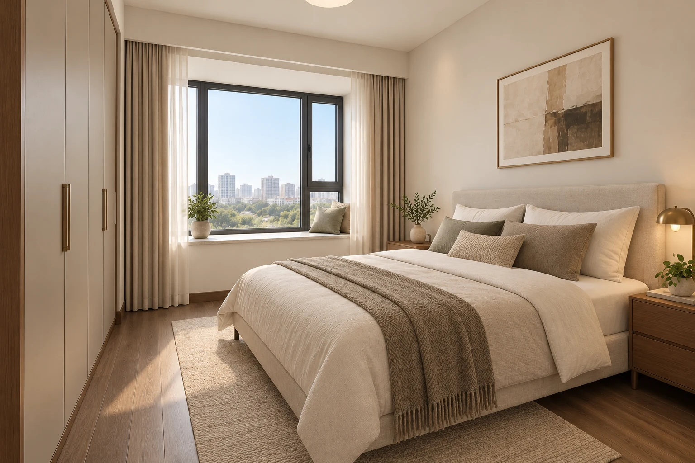
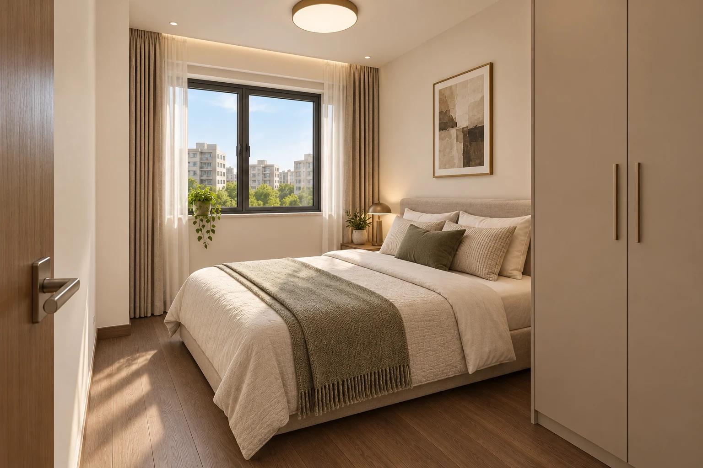
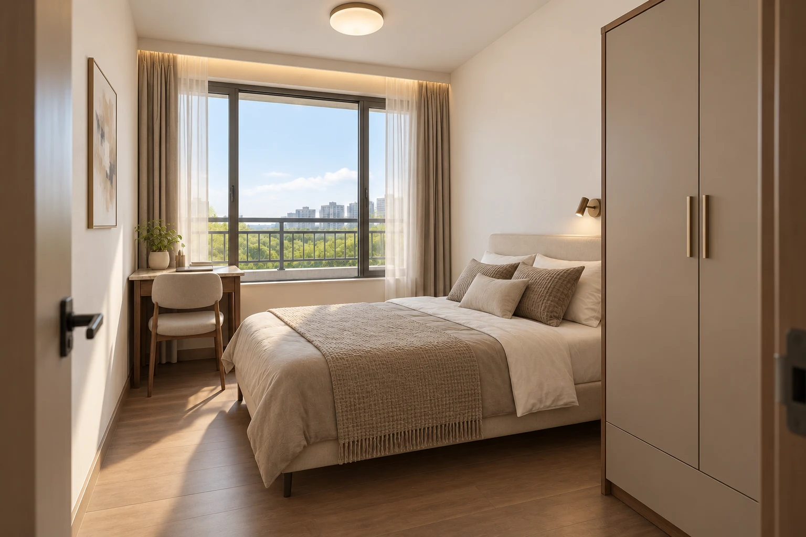
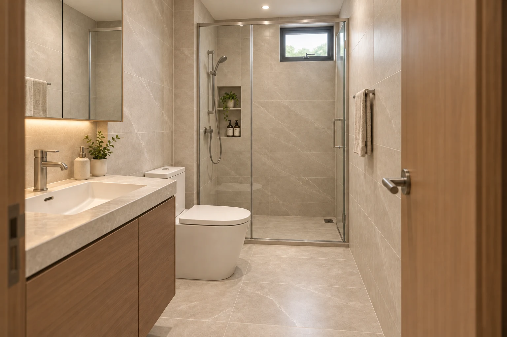
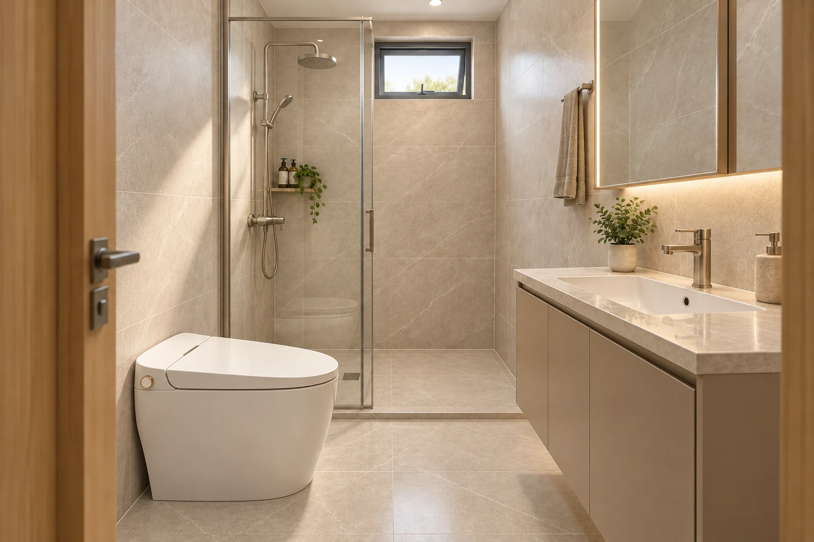
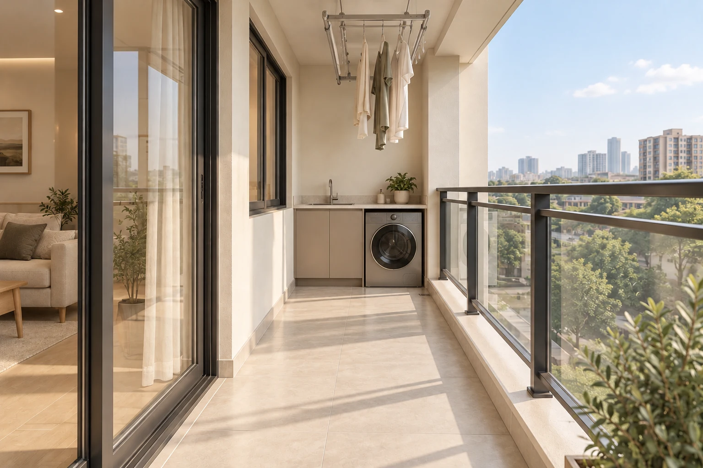

全屋3D

三房两厅两卫＋保留阳台，查看每个空间的配置和相对位置。
玄关

暖灰柜门配胡桃木，克制灯光。 浅鞋柜约0.3m深；这是入户小凹角，向客餐厅直接开敞。
客餐厅

暖灰与胡桃木、局部石纹电视墙和灯光。 保留客餐厅与封闭厨房、阳台的联系；家具净距待量房确定。
厨房

胡桃木柜、升级五金，含一台洗碗机。 后墙灶台、右侧窄窗与水槽、左侧冰箱；不新增岛台。
主卧

1.8m软包床、升级床垫与柜体五金。 南侧飘窗、床头靠东侧实墙；东侧共享墙不开窗。
原次卧

1.5m软包床、暖灰柜与胡桃木地面。 北侧窗、床头靠东侧；保留独立房门和床尾通行。
新增次卧

1.35m软包床、升级收纳与灯光。 约9.06㎡，朝保留阳台的窗；北侧约1m公共过道，独立进出。
公卫

普通马桶、胡桃木柜、石纹砖与玻璃隔断。 狭长空间内保留台盆、马桶、北端淋浴与北侧小窗。
主卫

智能马桶、升级台盆和淋浴五金。 单台盆、马桶和紧凑淋浴；北侧小窗，东侧共享墙不开窗。
阳台

单台洗烘一体机、升级耐候洗衣柜与晾衣配置。 开放阳台，约1.4m深；东端洗衣台，保留客厅门口与连续通道。